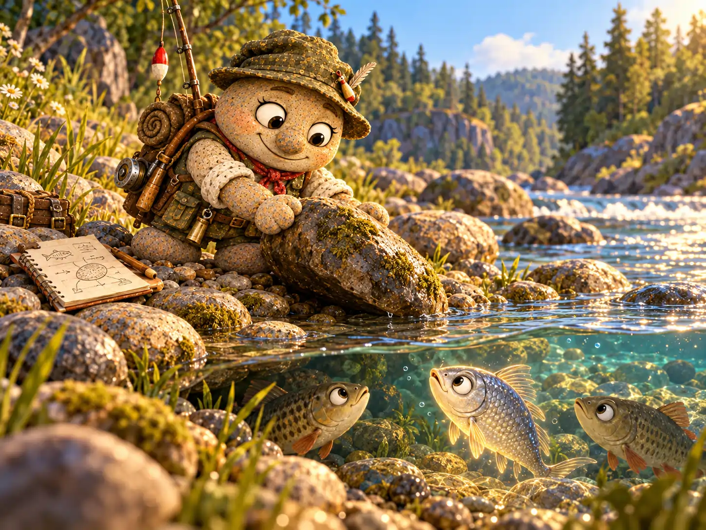
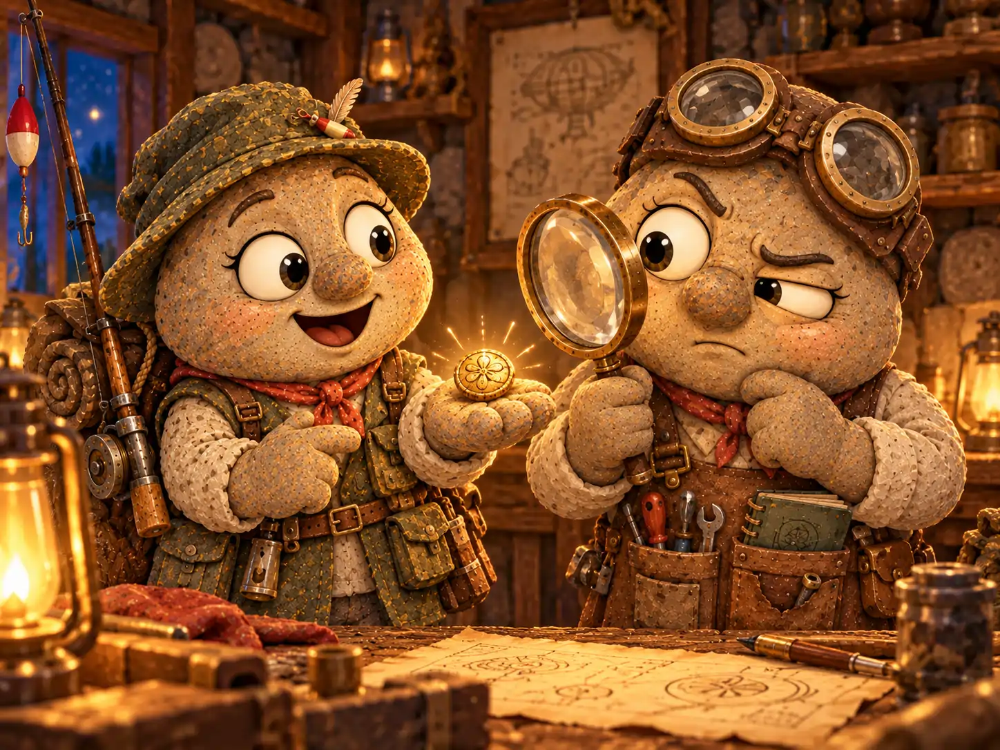
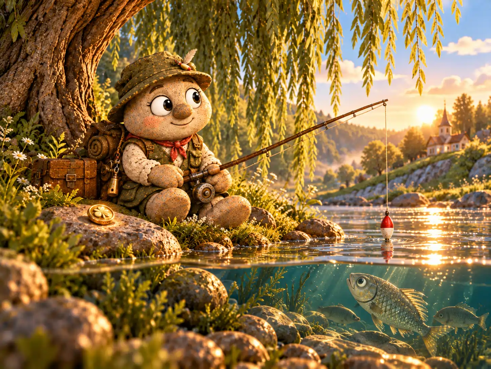

Егор Тихонов любил утро. Пока деревня только просыпалась, он уже шёл к реке: через плечо висела сумка со снастями, за спиной покачивалась удочка, а на голове сидела широкополая шляпа, пережившая столько дождей, что могла бы сама рассказывать истории.
Егор был рыбаком, но на берегу его занимала не только рыба. Глядя на поплавок, он представлял, как однажды вытащит из воды огромного сома, обнаружит затонувший сундук или найдёт такое сокровище, что даже староста Савелий попросит показать его на деревенской площади.
Больше всего Егор мечтал о золотом самородке. Он не знал, где такие находят, зато в подробностях представлял тот самый день: солнечный луч падает на песок, что-то вспыхивает, он наклоняется — и понимает, что удача наконец пришла.
— А если никакого самородка здесь нет? — однажды спросил почтальон Тимофей Булыжников, встретив его на мостике.
— Тогда я найду его в другом месте, — невозмутимо ответил Егор. — Но сначала проверю здесь.
Тимофей покачал головой. Егора было трудно переубедить, особенно когда речь шла о хорошем будущем.
✦ ✦ ✦
Однажды ночью Егору приснился необыкновенный сон. Он сидел на своём любимом берегу, только река вместо привычных синих бликов сияла мягким золотистым светом. В камышах зашуршало, и из воды медленно показалась крупная серебристая рыба.
Рыба подплыла совсем близко, посмотрела на Егора круглым глазом и неожиданно произнесла:
— Под одним из камней на этом берегу спрятано кое-что ценное.
— Золотой самородок? — мгновенно оживился Егор.
— Я сказала: ценное, — уточнила рыба.
— А большой?
Но рыба уже скрылась в золотой воде. Егор попытался разглядеть, к какому камню она подплывала, и проснулся как раз в тот момент, когда почти его заметил.
Утром он явился к реке раньше обычного. Берег был усыпан галькой и валунами. Между ними лежали сухие веточки, ракушки и принесённые течением обломки дерева. Некоторые камни были величиной с ладонь, другие едва удавалось сдвинуть.
Егор выбрал плоский серый камень у воды, приподнял его и заглянул под него. Там обнаружились только влажный песок и маленький речной жучок. Егор осторожно вернул камень на место и взялся за следующий.
В тот день он не нашёл ничего драгоценного. Зато к вечеру составил план: сначала проверить берег у старой ивы, затем пройти вдоль камышей, а уж потом обследовать изгиб реки за мельницей.
Первые недели поиски казались ему захватывающим приключением. Егор приносил на берег небольшую корзину, складывал в неё интересные находки — цветные стёклышки, необычные раковины, гладкие камешки — и показывал соседям, что удалось обнаружить.
— А где же золото? — спросила как-то Марфа Крошкина, когда Егор заглянул за утренней булочкой.
— Самое интересное обычно находят не сразу, — ответил он. — Зато посмотри, какой прозрачный камушек! На солнце будто светится.
Марфа честно полюбовалась камушком, но заметила, что булочку всё-таки лучше съесть, пока она тёплая. Егор согласился. Пустой желудок тоже не помогал поискам сокровищ.
Так потянулись месяцы. Егор по-прежнему рыбачил, чинил снасти и каждое утро ходил к реке, но теперь почти всегда выделял время на камни. Летом он работал у самой кромки воды, осенью разглядывал гальку, которую обнажало мелководье, а зимой, когда берег сковывал лёд, строил новые планы на весну.
Рыба у него ловилась редко. Стоило поплавку замереть, как Егор замечал рядом многообещающий камень, откладывал удочку и принимался за поиски. Вода мутнела от поднятого песка, и осторожная рыба уходила подальше.
Особенно часто поблизости мелькала одна большая серебристая рыба. Она держалась в глубине, за корнями ивы, и порой подолгу смотрела, как Егор осматривает дно. На его крючок она не попадалась. Егор же был настолько увлечён камнями, что почти не замечал постоянную наблюдательницу.
✦ ✦ ✦
Прошёл год. Однажды на берег заглянул Фома Знаменский, деревенский картограф. Он хотел уточнить линию берега для своей новой карты и обнаружил Егора за знакомым занятием.
— Ты помнишь, какие камни уже проверил? — спросил Фома.
Егор оглянулся на длинную полоску гальки.
— Почти все, — уверенно сказал он. Потом подумал и добавил: — По крайней мере, многие.
Фома присел, раскрыл блокнот и набросал очертания речного изгиба. Разделил берег на несколько участков, обозначил иву, камыши и плоский валун у тропинки.
— Если ты ищешь везде понемногу, то можешь десять раз поднять один камень и ни разу не проверить соседний, — объяснил он. — На карте будет видно, где ты уже был.
— Замечательная мысль! — обрадовался Егор. — Когда я найду самородок, обязательно покажу тебе точное место.
— Лучше сначала отмечай места, где ничего не нашёл, — заметил Фома. — Их у тебя пока больше.
Егор не обиделся. Вечером он аккуратно перенёс схему в тетрадь и с тех пор ставил маленькую отметку после каждого обследованного участка. Поиски стали спокойнее: теперь не нужно было каждый раз решать, с чего начинать.
Весной вода поднялась и размыла часть берега у любимого места Егора. Василиса Камушкина подсказала, как укрепить почву у тропинки, чтобы та не осыпалась в реку. Егор помог уложить камни вдоль края и пообещал не разбирать укрепление ради поисков.
— А самородок? — поинтересовалась Василиса.
— Если он там, — рассудил Егор, — значит, умеет ждать. Я тоже научусь.
Прошло ещё лето, за ним осень. Шляпа Егора выцвела, тетрадь покрылась пятнами от дождя, а на её страницах почти не осталось незаполненных клеточек. Со дня удивительного сна минуло уже два года.

Тимофей, проходивший мимо с почтовой сумкой, застал его возле ивы.
— Два года, Егор! Неужели ты всё ещё веришь рыбе из сна?
— Не знаю, была ли рыба права, — признался Егор. — Но я ведь не видел, что лежит под каждым камнем. Как тут утверждать наверняка?
Тимофей усмехнулся, а потом помог другу поднять корзину со снастями. Он давно понял: Егор любил не только удачу, которую ожидал, но и само ожидание.
✦ ✦ ✦
Наутро после сильного дождя река немного отступила. Возле ивы показалась узкая полоска свежего песка, которой на старой карте Фомы не было. Среди нанесённой течением гальки лежал небольшой плоский камень с белой полосой поперёк.
Егор заметил его, когда собирался поставить удочку. Камень выглядел самым обыкновенным, но лежал там, куда раньше не удавалось добраться.
Он осторожно отодвинул камень в сторону. В мокром песке что-то блеснуло.
Егор замер. Затем присел, отгрёб песок пальцами и поднял маленький круглый предмет. Тот сиял тёплым жёлтым светом, а по краю виднелся тонкий узор.
— Нашёл! — выдохнул Егор. И уже громче, на весь берег: — Кажется, нашёл!
Первым прибежал Тимофей, как раз возвращавшийся от мельницы. Потом подошли Марфа и несколько жителей, услышавших радостные возгласы. Все по очереди рассматривали находку, стараясь не уронить её обратно в песок.
— На золото похоже, — осторожно сказала Марфа.
— Сейчас узнаем, — пообещал Тимофей и отправился за Кузьмой Лаптевым.
Кузьма, деревенский изобретатель, появился с небольшой лупой и коробочкой инструментов. Он внимательно осмотрел предмет с обеих сторон, смахнул песок с обратной стороны и указал на маленькое металлическое ушко.
— Боюсь, это не самородок, — сказал он. — Это старая латунная пуговица. Видишь крепление? А здесь — узор, похожий на речные волны.
Все притихли. Два года поисков — и обыкновенная пуговица!
Егор ещё раз взглянул на находку. На мгновение ему стало досадно: он уже успел представить, как золотой самородок лежит на столе у старосты, а вокруг собираются жители. Но потом он провёл пальцем по узору и улыбнулся.
— Значит, рыба сказала правду. Под камнем действительно было кое-что ценное.
— Это всего лишь пуговица, — мягко возразил Тимофей.
— Для кого-то всего лишь, — ответил Егор. — А я два года думал, что под этими камнями ничего интересного нет. И вот пожалуйста: старая вещица, которую кто-то когда-то потерял. Интересно, чья она была?
Кузьма повертел пуговицу на ладони.
— Этого я не знаю. Но сделана она добротно. Почистишь — будет как новая.

Егор завернул находку в чистый платок и бережно убрал в сумку. Свою мечту о самородке он не отменил. Просто решил, что теперь будет заниматься поисками тогда, когда река сама откроет новое место, а остальное время посвятит рыбалке.
✦ ✦ ✦
Вечером Егор сидел на берегу под старой ивой. Удочка была заброшена, поплавок тихо покачивался на воде. Рядом, на плоском камне, лежала отмытая пуговица — жёлтая, с маленькими волнами по краю.
В прозрачной воде мелькнула серебристая спина. Крупная рыба остановилась у корней ивы, привычно наблюдая за человеком на берегу. За два года она изучила его шляпу, удочку и странную привычку заглядывать под камни, но так ни разу и не попалась ему на крючок.
Егор смотрел на закат и не заметил её. Ему пришло в голову, что завтра можно наконец спокойно порыбачить, а потом попробовать узнать, кому когда-то принадлежала найденная пуговица. Даже без золотого самородка дел оказалось немало.
Ночью серебристая рыба приснилась ему снова.
— Я ведь не говорила, что под камнем золото, — напомнила она.
— Знаю, — согласился Егор. — Но ты сказала, что там есть что-то ценное. И оказалась права.
Рыба подозрительно прищурилась.
— Надеюсь, теперь ты перестанешь переворачивать все камни подряд?
— Конечно, — заверил Егор. — Только те, под которыми будет хороший повод поискать.
Рыба облегчённо махнула хвостом и скрылась в глубине. А Егор проснулся с прекрасным настроением.
На следующее утро он отправился к реке с удочкой и без тетради. Сел под ивой, забросил леску и терпеливо стал ждать поклёвки. Привычка смотреть на камни никуда не делась, но впервые за долгое время Егор не торопился к ним.
Поплавок качнулся. Потом ещё раз.
— Ну вот, — тихо сказал Егор. — Похоже, удача начинается с обычной рыбалки.

В Почтовом архиве Галькино к этому делу добавили запись:
«Егор Тихонов, в течение двух лет искал золотой самородок по подсказке серебристой рыбы из сна. Обнаружена старинная латунная пуговица. Золотой самородок пока не найден. Рыба для объяснений не явилась».
Тимофей хотел приписать внизу: «Дело закрыто». Но Егор попросил оставить немного свободного места.
— Зачем? — удивился почтальон.
— На случай, если однажды найдётся и самородок.
Тимофей вздохнул, оставил место и закрыл архивную папку. В конце концов, в Галькино уже привыкли: если Егор Тихонов чего-то ещё не нашёл, это не означает, что он перестал надеяться.